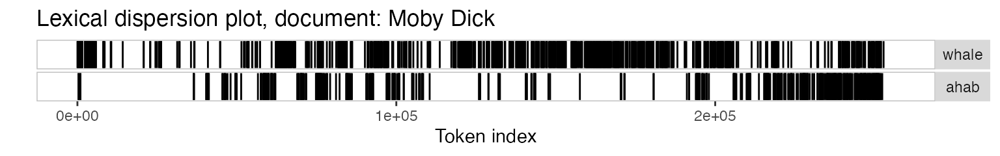
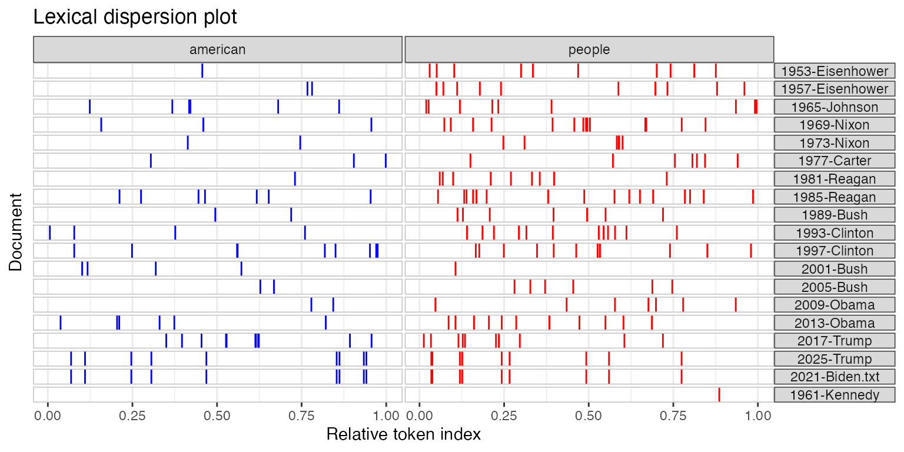

Example: textual data visualization
Kenneth Benoit, Adam Obeng, and Stefan Müller
Source:vignettes/pkgdown/examples/plotting.Rmd
plotting.Rmdlibrary(quanteda)
This vignette walks through various plot options available in quanteda through the textplot_* functions.
Wordcloud
The frequency of features can be plotted as a wordcloud using textplot_wordcloud().
dfm_inaug <- corpus_subset(data_corpus_inaugural, Year <= 1826) %>% dfm(remove = stopwords('english'), remove_punct = TRUE) %>% dfm_trim(min_termfreq = 10, verbose = FALSE) set.seed(100) textplot_wordcloud(dfm_inaug)

You can also plot a “comparison cloud”, but this can only be done with fewer than eight documents:
corpus_subset(data_corpus_inaugural, President %in% c("Washington", "Jefferson", "Madison")) %>% dfm(groups = "President", remove = stopwords("english"), remove_punct = TRUE) %>% dfm_trim(min_termfreq = 5, verbose = FALSE) %>% textplot_wordcloud(comparison = TRUE)

Plot will pass through additional arguments to the underlying call to wordcloud.
textplot_wordcloud(dfm_inaug, min_count = 10, color = c('red', 'pink', 'green', 'purple', 'orange', 'blue'))

Lexical dispersion plot
Plotting a kwic object produces a lexical dispersion plot which allows us to visualize the occurrences of particular terms throughout the text. We call these “x-ray” plots due to their similarity to the data produced by Amazon’s “x-ray” feature for Kindle books.
data_corpus_inaugural_subset <- corpus_subset(data_corpus_inaugural, Year > 1949) kwic(data_corpus_inaugural_subset, pattern = "american") %>% textplot_xray()

You can also pass multiple kwic objects to plot to compare the dispersion of different terms:
textplot_xray( kwic(data_corpus_inaugural_subset, pattern = "american"), kwic(data_corpus_inaugural_subset, pattern = "people"), kwic(data_corpus_inaugural_subset, pattern = "communist") )

If you’re only plotting a single document, but with multiple keywords, then the keywords are displayed one below the other rather than side-by-side.
require(readtext)
## Loading required package: readtextdata_char_mobydick <- texts(readtext("http://www.gutenberg.org/cache/epub/2701/pg2701.txt")) names(data_char_mobydick) <- "Moby Dick" textplot_xray( kwic(data_char_mobydick, pattern = "whale"), kwic(data_char_mobydick, pattern = "ahab") )

You might also have noticed that the x-axis scale is the absolute token index for single texts and relative token index when multiple texts are being compared. If you prefer, you can specify that you want an absolute scale:
textplot_xray( kwic(data_corpus_inaugural_subset, pattern = "american"), kwic(data_corpus_inaugural_subset, pattern = "people"), kwic(data_corpus_inaugural_subset, pattern = "communist"), scale = "absolute" )
In this case, the texts may not have the same length, so the tokens that don’t exist in a particular text are shaded in grey.
Modifying lexical dispersion plots
The object returned is a ggplot object, which can be modified using ggplot:
library("ggplot2") theme_set(theme_bw()) g <- textplot_xray( kwic(data_corpus_inaugural_subset, pattern = "american"), kwic(data_corpus_inaugural_subset, pattern = "people"), kwic(data_corpus_inaugural_subset, pattern = "communist") ) g + aes(color = keyword) + scale_color_manual(values = c("blue", "red", "green")) + theme(legend.position = "none")

Frequency plots
You can plot the frequency of the top features in a text using topfeatures.
features_dfm_inaug <- textstat_frequency(dfm_inaug, n = 100) # Sort by reverse frequency order features_dfm_inaug$feature <- with(features_dfm_inaug, reorder(feature, -frequency)) ggplot(features_dfm_inaug, aes(x = feature, y = frequency)) + geom_point() + theme(axis.text.x = element_text(angle = 90, hjust = 1))
If you wanted to compare the frequency of a single term across different texts, you can also use textstat_frequency, group the frequency by speech and extract the term.
# Get frequency grouped by president freq_grouped <- textstat_frequency(dfm(data_corpus_inaugural_subset), groups = "President") # Filter the term "american" freq_american <- subset(freq_grouped, freq_grouped$feature %in% "american") ggplot(freq_american, aes(x = group, y = frequency)) + geom_point() + scale_y_continuous(limits = c(0, 14), breaks = c(seq(0, 14, 2))) + xlab(NULL) + ylab("Frequency") + theme(axis.text.x = element_text(angle = 90, hjust = 1))

The above plots are raw frequency plots. For relative frequency plots, (word count divided by the length of the chapter) we need to weight the document-frequency matrix first. To obtain expected word frequency per 100 words, we multiply by 100.
dfm_rel_freq <- dfm_weight(dfm(data_corpus_inaugural_subset), scheme = "prop") * 100 head(dfm_rel_freq)
## Document-feature matrix of: 6 documents, 4,216 features (85.1% sparse) and 4 docvars.
## features
## docs my friends , before i
## 1953-Eisenhower 0.14582574 0.14582574 4.593511 0.1822822 0.10936930
## 1957-Eisenhower 0.20975354 0.10487677 6.345045 0.1573152 0.05243838
## 1961-Kennedy 0.19467878 0.06489293 5.451006 0.1297859 0.32446463
## 1965-Johnson 0.17543860 0.05847953 5.555556 0.2339181 0.87719298
## 1969-Nixon 0.28973510 0 5.546358 0.1241722 0.86920530
## 1973-Nixon 0.05012531 0.05012531 4.812030 0.2005013 0.60150376
## features
## docs begin the expression of those
## 1953-Eisenhower 0.03645643 6.234050 0.03645643 5.176814 0.1458257
## 1957-Eisenhower 0 5.977976 0 5.034085 0.1573152
## 1961-Kennedy 0.19467878 5.580792 0 4.218040 0.4542505
## 1965-Johnson 0 4.502924 0 3.333333 0.1754386
## 1969-Nixon 0 5.629139 0 3.890728 0.4552980
## 1973-Nixon 0 4.160401 0 3.408521 0.3007519
## [ reached max_nfeat ... 4,206 more features ]rel_freq <- textstat_frequency(dfm_rel_freq, groups = "President") # Filter the term "american" rel_freq_american <- subset(rel_freq, feature %in% "american") ggplot(rel_freq_american, aes(x = group, y = frequency)) + geom_point() + scale_y_continuous(limits = c(0, 0.7), breaks = c(seq(0, 0.7, 0.1))) + xlab(NULL) + ylab("Relative frequency") + theme(axis.text.x = element_text(angle = 90, hjust = 1))

Finally, texstat_frequency allows to plot the most frequent words in terms of relative frequency by group.
dfm_weight_pres <- data_corpus_inaugural %>% corpus_subset(Year > 2000) %>% dfm(remove = stopwords("english"), remove_punct = TRUE) %>% dfm_weight(scheme = "prop") # Calculate relative frequency by president freq_weight <- textstat_frequency(dfm_weight_pres, n = 10, groups = "President") ggplot(data = freq_weight, aes(x = nrow(freq_weight):1, y = frequency)) + geom_point() + facet_wrap(~ group, scales = "free") + coord_flip() + scale_x_continuous(breaks = nrow(freq_weight):1, labels = freq_weight$feature) + labs(x = NULL, y = "Relative frequency")

Plot “keyness” in a target and reference group
If you want to compare the differential associations of keywords in a target and reference group, you can calculate “keyness” which is based on textstat_keyness. In this example, we compare the inaugural speech by Donald Trump with the speeches by Barack Obama.
# Only select speeches by Obama and Trump pres_corpus <- corpus_subset(data_corpus_inaugural, President %in% c("Obama", "Trump")) # Create a dfm grouped by president pres_dfm <- dfm(pres_corpus, groups = "President", remove = stopwords("english"), remove_punct = TRUE) # Calculate keyness and determine Trump as target group result_keyness <- textstat_keyness(pres_dfm, target = "Trump") # Plot estimated word keyness textplot_keyness(result_keyness)

# Plot without the reference text (in this case Obama) textplot_keyness(result_keyness, show_reference = FALSE)

Plot fitted scaling models
You can also plot fitted Wordscores (Laver et al., 2003) or Wordfish scaling models (Proksch and Slapin, 2008).
Wordscores
Wordscores is a scaling procedure for estimating policy positions or scores (Laver et al., 2003). Known scores are assigned to so called reference texts in order to infer the positions of new documents (“virgin texts”). You can plot the position of words (features) against the logged term frequency, or the position of the documents.
library("quanteda.textmodels")
##
## Attaching package: 'quanteda.textmodels'## The following object is masked from 'package:quanteda':
##
## data_dfm_lbgexample# Transform corpus to dfm data(data_corpus_irishbudget2010, package = "quanteda.textmodels") ie_dfm <- dfm(data_corpus_irishbudget2010) # Set reference scores refscores <- c(rep(NA, 4), 1, -1, rep(NA, 8)) # Predict Wordscores model ws <- textmodel_wordscores(ie_dfm, y = refscores, smooth = 1) # Plot estimated word positions (highlight words and print them in red) textplot_scale1d(ws, highlighted = c("minister", "have", "our", "budget"), highlighted_color = "red")

# Get predictions pred <- predict(ws, se.fit = TRUE) # Plot estimated document positions and group by "party" variable textplot_scale1d(pred, margin = "documents", groups = docvars(data_corpus_irishbudget2010, "party"))

# Plot estimated document positions using the LBG transformation and group by "party" variable pred_lbg <- predict(ws, se.fit = TRUE, rescaling = "lbg") textplot_scale1d(pred_lbg, margin = "documents", groups = docvars(data_corpus_irishbudget2010, "party"))

Wordfish
Wordfish is a Poisson scaling model that estimates one-dimension document positions using maximum likelihood (Slapin and Proksch, 2008). Both the estimated position of words and the positions of the documents can be plotted.
# Estimate Wordfish model library("quanteda.textmodels") wf <- textmodel_wordfish(dfm(data_corpus_irishbudget2010), dir = c(6,5)) # Plot estimated word positions textplot_scale1d(wf, margin = "features", highlighted = c("government", "global", "children", "bank", "economy", "the", "citizenship", "productivity", "deficit"), highlighted_color = "red")

# Plot estimated document positions textplot_scale1d(wf, groups = docvars(data_corpus_irishbudget2010, "party"))

Correspondence Analysis
You can also plot the estimated document positions of a correspodence analysis (Nenadic and Greenacre 2007).
# Transform corpus to dfm ie_dfm <- dfm(data_corpus_irishbudget2010) # Run correspondence analysis on dfm ca <- textmodel_ca(ie_dfm) # Plot estimated positions and group by party textplot_scale1d(ca, margin = "documents", groups = docvars(data_corpus_irishbudget2010, "party"))

References
Laver, Michael, Kenneth Benoit, and John Garry. 2003. “Extracting Policy Positions from Political Texts Using Words as Data.” American Political Science Review 97(2): 311-331.
Nenadic, Oleg and Michael Greenacre. 2007. “Correspondence analysis in R, with two- and three-dimensional graphics: The ca package.” Journal of Statistical Software 20(3): 1–13.
Slapin, Jonathan and Sven-Oliver Proksch. 2008. “A Scaling Model for Estimating Time-Series Party Positions from Texts.” American Journal of Political Science 52(3): 705–772.